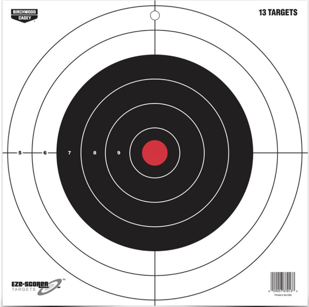
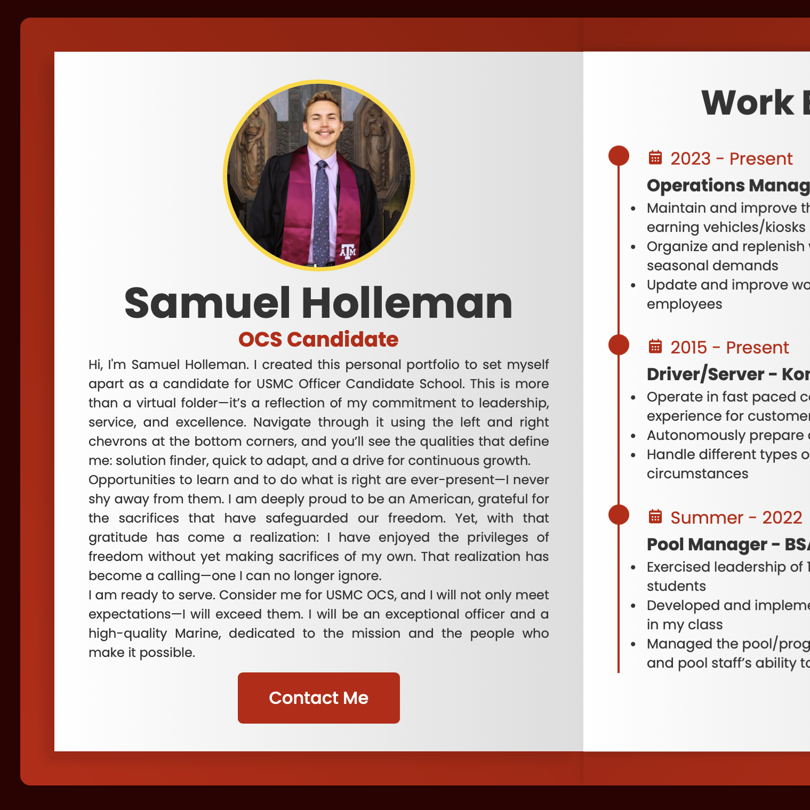

Unfortunately, the screen size of the device you are using is too small for proper formatting. Please open this website on a device with a larger screen. You can also try turning your device in landscape mode.
Hello! I created this personal portfolio to set myself apart as a candidate for this position. I am a results-driven professional who thrives on learning and growth. As a quick learner, I excel at rapidly acquiring new skills and adapting to evolving challenges, allowing me to contribute meaningfully from day one. I value structured processes and clear procedures, which I follow diligently while continuously seeking opportunities to optimize workflows and drive innovation. My resourceful approach enables me to find creative solutions and leverage available tools effectively to overcome obstacles. Strong communication is at the core of my professional approach—I believe in fostering collaborative relationships and ensuring transparency in all interactions. Above all, I am deeply committed to accountability and excellence. When I take on a responsibility, I own it completely, ensuring that colleagues and clients can depend on me to deliver quality results consistently. This combination of adaptability, systematic thinking, resourcefulness, and unwavering reliability has enabled me to succeed across diverse environments and tackle complex challenges with confidence.
Bachelor of Science: Recreation, Park and Tourism Sciences; Minor: Business,
cum laude | GPA: 3.542
Extracarricular activities:
Achieved a 9th-place ranking among 500 peers while balancing multiple extracurriculars.
Despite unweighted grades in band and soccer (100) negativley impacting the overall average,
I maintained competitveness | GPA: 4.12
Extracarricular activities:
I attended Officer Candidates School (OCS) at Marine Corps Base Quantico, where I underwent rigorous evaluation to determine my suitability for leading Marines. Unlike enlisted recruit training, which focuses on developing recruits into Marines, OCS actively seeks reasons for elimination, maintaining the Corps' highest standards for officer selection. The evaluation system weights leadership at 50% of the final grade, with Physical Fitness and Academics each comprising 25%. Candidates must achieve a minimum 80% overall score to graduate. The leadership evaluation encompasses multiple dimensions: directing small teams in simulated combat scenarios, executing platoon-level leadership responsibilities, demonstrating the character qualities necessary to earn positive peer evaluations, and meeting additional leadership benchmarks. These assessments occur under conditions designed to test decision-making capabilities while candidates experience significant physical, mental, and emotional stress. By successfully graduating from OCS, I demonstrated possession of the leadership qualities the United States Marine Corps demands of its officers.
3rd in the chain of command, after the two business owners. Employees would come to me with questions to answer and problems to solve. I also took part in training the employees and refining employee procedures. It was incredibly important that I followed the procedures perfectly so that other employees could emulate the example I set. On top of ensuring employees were well equipped to fulfil their roles, I also aimed to foster a friendly and fun work environment.
The Unit Leader position at Officer Candidates School (OCS) is the most demanding leadership role available to candidates. The Unit Leader stands adjacent to the platoon and calls cadence during drill movements. Drill represents a sacred tradition within the United States Marine Corps and commands corresponding respect and precision. This discipline requires unwavering attention to detail, mental focus, and physical presence. Unit Leaders operate under intense scrutiny, as the position demands flawless execution, vocal confidence, and decisive command presence without hesitation. As Unit Leader for my platoon of over 50 candidates, I maintained an unwavering commitment to excellence. The transition from civilian to military leader calling cadence presented a steep learning curve, yet I adapted quickly to meet these rigorous standards. The gravity and significance of this responsibility is difficult to convey to those unfamiliar with Marine Corps drill traditions. Serving in this capacity was both an exceptional challenge and a distinguished honor.
With no fencing background, I mastered tasks from cutting cedar trees for custom H-braces to securing wire clips on T-posts. Head-to-toe this project is mine. This reflects my capacity to quickly learn, develop a project plan, and execute it with precision and excellence.

Prior to the test, I aimed for a perfect score, completing three classes for thorough preparation and practicing at the range to refine my accuracy. My commitment and focus paid off with a flawless 150/150 result.
Installed water and electric utility lines to a trough from a well house while rerouting the house water line to prevent freezing due to air exposure. This highlights my knack for learning quickly and executing with precision.
Crafted a custom corner bench to optimize an awkward space in the main room, leveraging 3D design skills to create a blueprint and adeptly adjusting during construction to overcome unexpected obstacles.

Completed a free HTML and CSS course to enhance this application, applying newfound skills and online tutorials to build the website you're navigating. This demonstrates my initiative to surpass expectations and broaden my expertise.